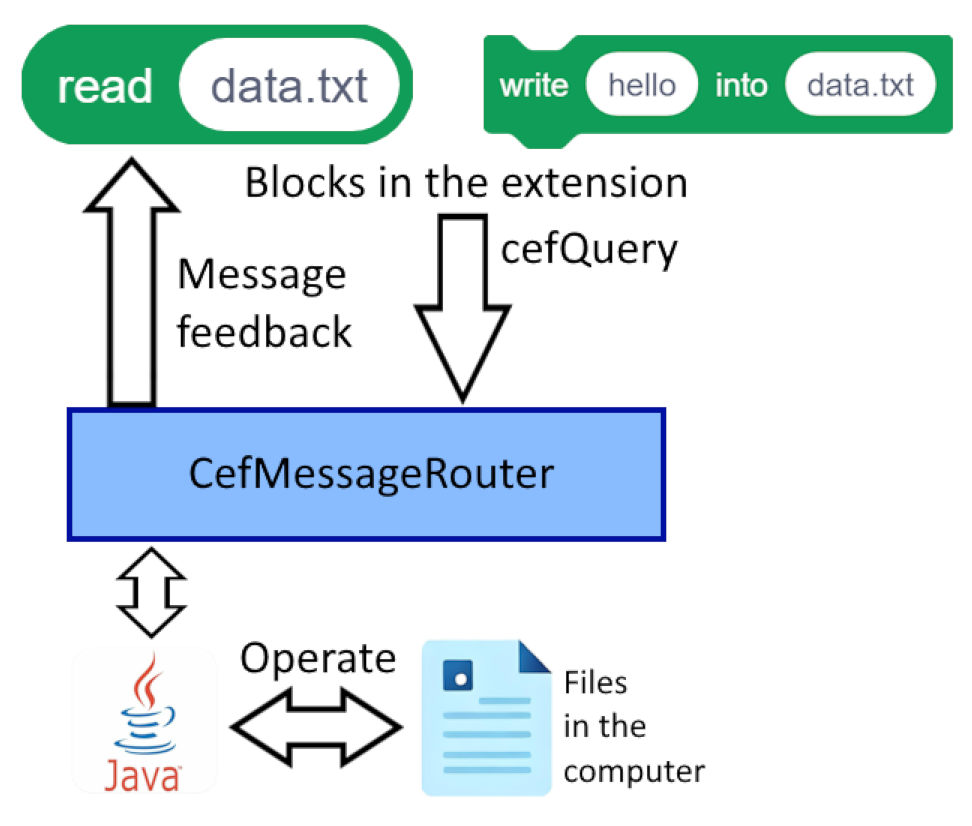
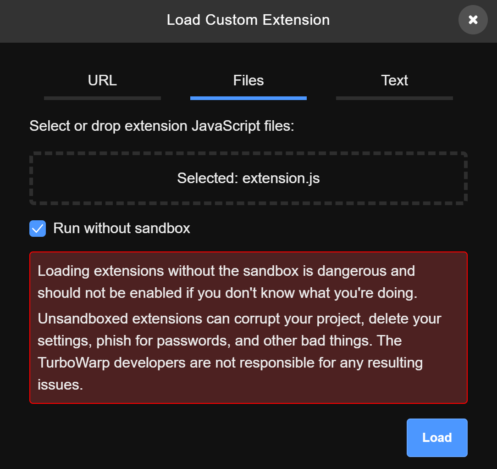

Java-js Bridge
This project solves a long-standing pain point of TurboWarp projects: direct access to local files. It embeds a TurboWarp project inside a JCEF (Java Chromium Embedded Framework) window and bridges it to the host filesystem through window.cefQuery, a message router, and an unsandboxed custom extension.
The Problem
TurboWarp compiles Scratch projects into fast JavaScript/WebAssembly and runs them inside an ordinary browser sandbox. Web security rules deliberately prevent a page from silently reading arbitrary files on the host machine:
fetch("file://...")is blocked by browsers for security reasons.- The official File System Access API requires a user gesture and a file-picker dialog for every single file, which is unusable when a project wants to auto-load a whole folder of textures, sound banks or save data.
As a result, a TurboWarp project running locally still behaves like a website: no reliable access to the files next to it.
The Solution: JCEF + Custom Extension Bridge
Instead of fighting the sandbox, this project replaces the browser itself. JCEF is the Java port of the Chromium Embedded Framework: it embeds a full Chromium browser inside a Swing application and lets the host register a message router that injects a JS↔Java bridge (window.cefQuery) into the page. A custom unsandboxed TurboWarp extension turns that bridge into Scratch blocks.
The bridge chain is: Scratch block → extension.js → window.cefQuery → CefMessageRouter → FileMessageRouterHandler (Java) → local file.
The Bridge Protocol
All communication is JSON over window.cefQuery:
// Request (from the page to Java)
{ "action": "readFile", "path": "data.txt", "data": "hello" }
// Response (from Java back to the page)
{ "ok": true, "data": "file content..." } // success
{ "ok": false, "error": "message" } // failureEight actions are implemented on the Java side:
| Action | Purpose | data (response) |
|---|---|---|
readFile | Read a file | file content (UTF-8) |
writeFile | Overwrite a file | empty |
appendFile | Append to a file | empty |
listDir | List directory entries | JSON array string |
exists | Check path existence | "true" / "false" |
deleteFile | Delete file or empty dir | empty |
makeDir | Create directories recursively | empty |
fileSize | File size in bytes | number string |
How It Works
- Host startup —
Main.javainitializes CEF through jcefmaven (CefAppBuilder, install dirjcef-bundle), keeps the GPU enabled (TurboWarp needs WebGL) and enables off-screen rendering (windowless_rendering_enabled = true) so the browser embeds cleanly into a Swing window. - Bridge registration — a
CefMessageRouterwithFileMessageRouterHandleris attached to the client. From then on every page in the browser gets awindow.cefQueryfunction. - Project load — the app loads
Project.html(a TurboWarp packager output) fromfile:///, and the project loads the custom Local File extension in unsandboxed mode. - Block call — when a Scratch block like
read [PATH]runs,extension.jsbuilds a payload{action, path, data}, serializes it and callswindow.cefQuery(...), wrapped in a Promise. - Java side —
onQueryhands the request to a 4-thread executor (so the CEF UI thread is never blocked);dispatch()performs the file operation withjava.nio.fileand replies viacallback.success(json). - Back to Scratch — the JSON response is parsed,
okis checked, and the value (or an error) resolves the Promise. Reporter blocks return the value; command blocks simply await completion.
Components
Main.java — the JCEF host
- Initializes
CefAppviaCefAppBuilder; native libraries ship as Gradle dependencies (no runtime download). - Never disables the GPU:
--disable-gpustays commented out because TurboWarp projects rely on WebGL hardware acceleration. - Creates the message router and embeds the browser; mirrors the page title into the window via
CefDisplayHandlerAdapter.onTitleChange. - Loads the project's favicon on a background thread (
FaviconLoader) and sets it as the frame icon — without blocking the UI. - On window close:
browser.close(true)andcefApp.dispose()release all native resources.
FileMessageRouterHandler.java — the Java bridge
- Extends
CefMessageRouterHandlerAdapter;onQueryparses the JSON request and dispatches by action. - All operations use
java.nio.file(Files.readAllBytes,Files.write,Files.createDirectories,Files.list,Files.deleteIfExists,Files.size). - Errors are caught and returned as
{"ok":false,"error":...}instead of crashing the page. - Security:
ROOT_LIMITisnullby default (same permissions as the current user). When set, every path is normalized and checked withstartsWith, which blocks../traversal outside the allowed root.
extension.js — the TurboWarp extension (“Local File”)
- Requires the extension sandbox to be disabled: it throws
"Run it unsandbox!!!"otherwise, because only unsandboxed extensions may touchwindow.cefQuery. callJava(payload)wrapswindow.cefQueryinto a Promise;exec(action, path, data)builds the payload, checksokand returnsdata.- Exposes eight Scratch blocks (green “Local File” category): read / write / append / list directory / exists / delete / make directory / file size.
FaviconLoader.java — the finishing touch
- Scans
Project.htmlfor<link rel="...">icons with priority apple-touch-icon > shortcut icon > icon. - Handles relative/absolute file paths, http(s) URLs and
data:URIs; decodes PNG/JPEG/GIF/BMP and ICO files with embedded PNGs (SVG is skipped). - Enforces a 2 MB limit so a broken icon can never stall the window; any failure silently returns
null.
Usage
Using the bridge in a project takes three steps.
- Run the host app — place
Project.html(packaged from TurboWarp) next to the program and start it. A Swing window opens with the project inside an embedded Chromium (Chromium 146). - Load the extension unsandboxed — in the project, add the Local File extension (
extension.js) in unsandboxed mode. Otherwise it refuses to start. - Build blocks — for example:
when green flag clicked
if <exists [save.txt]> then
set [content v] to (read [save.txt]) // reporter -> file text
say (content)
else
write [hello] into [save.txt] // command, awaits completion
append [more lines] to [save.txt]
end
list directory [.] // -> JSON array string
file size of [save.txt] // -> numberReporter/boolean blocks return their value directly to Scratch; command blocks (write/append/delete/makeDir) finish asynchronously and the next block runs after the operation completes. That is enough to build auto-save, level editors, asset loaders or text-based games that read and write real files on disk.
Diagram & Screenshots



Security Notes
- The unsandboxed extension runs with the same permissions as the current user — the bridge is a powerful tool and should only be enabled for projects you trust (a historical TurboWarp Desktop bug, CVE-2023-40168, allowed a malicious project to exfiltrate arbitrary files).
- For untrusted projects, set
ROOT_LIMITinFileMessageRouterHandlerto an allow-listed directory; paths are normalized and prefix-checked, blocking../traversal. - Never load unknown projects or unknown extensions into this app.